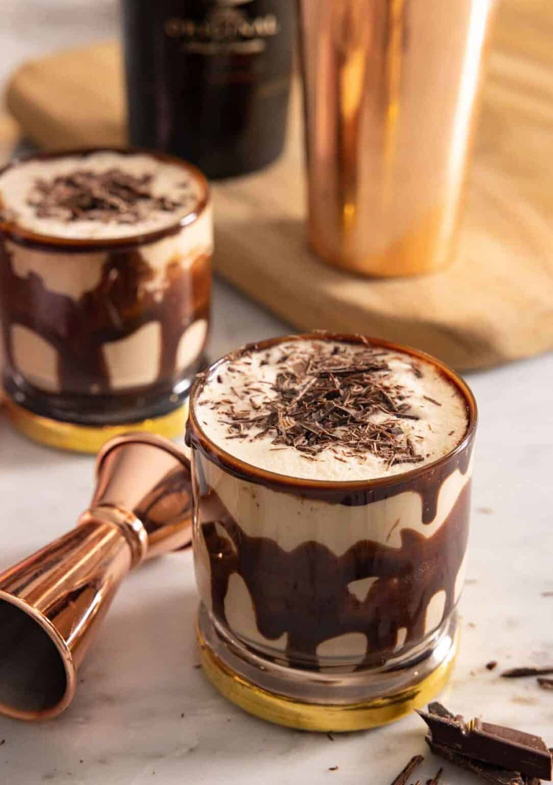

Mudslide Cocktail
The Mudslide cocktail is a rich and indulgent blend of vodka, coffee liqueur, and Irish cream, creating a smooth, dessert-like drink with a velvety texture. Served over ice or blended into a creamy frozen treat, this classic cocktail delivers the perfect balance of coffee, chocolate, and cream flavours. Topped with whipped cream or a drizzle of chocolate syrup, the Mudslide is a decadent choice for those who enjoy a sweet yet boozy treat, perfect for after-dinner sipping or a luxurious cocktail hour.
Ingredients
- Chocolate syrup for glass decoration
- 1/4 cup heavy cream
- 3 oz. vodka
- 2 oz. Bailey's
- 2 oz. Kahlúa
- Ice
- Chocolate shavings for garnish
Instructions
- Drizzle sides and bottom of 2 cocktail glasses with chocolate syrup.
- In a cocktail shaker, combine cream, vodka, Baileys, and Kahlúa. Fill shaker with ice, cover, and vigorously shake until outside of shaker is very frosty, about 20 seconds.
- Strain into prepared glasses. Garnish with chocolate shavings.
Notes
- Flavored vodkas such as espresso and chocolate vodka also work well in this mudslide recipe.
- Don’t have a cocktail shaker? You can use a mason jar or any jar with a tight-fitting lid then strain through a mesh strainer.
- Avoid adding crushed ice to the shaker as the ice will melt quicker and water down the cocktail.
- For a colder cocktail, place the vodka in the freezer. It won’t freeze due to the alcohol content but instead, keep the drink cold.
- To quickly shave chocolate to garnish your mudslide, use a box grater.